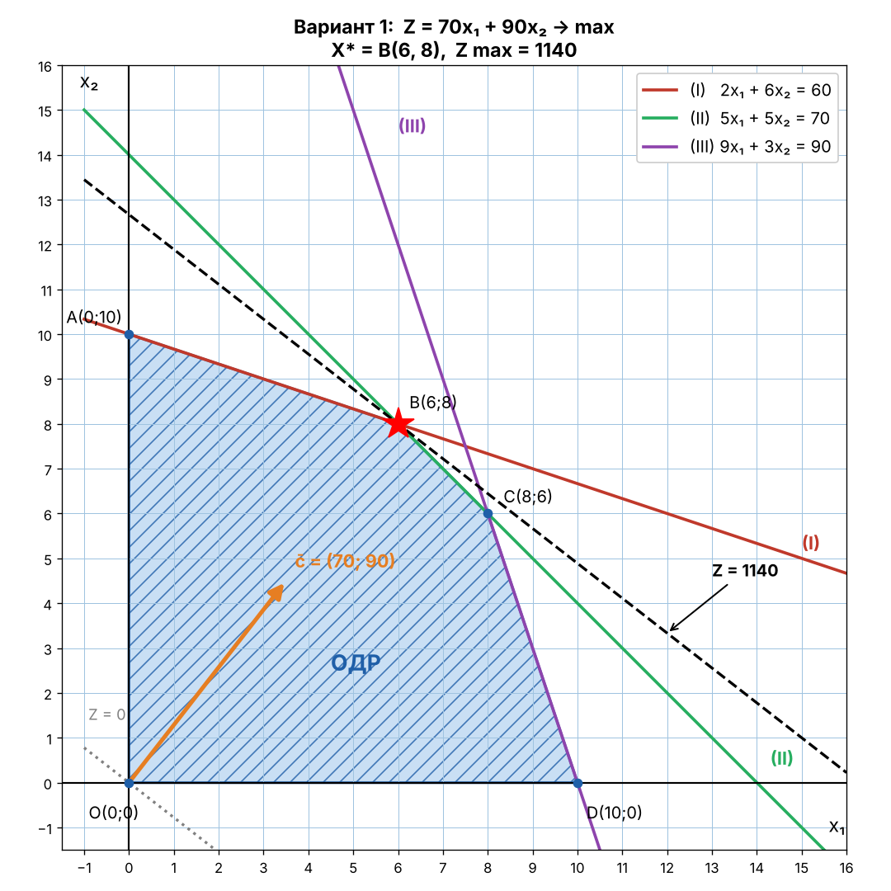
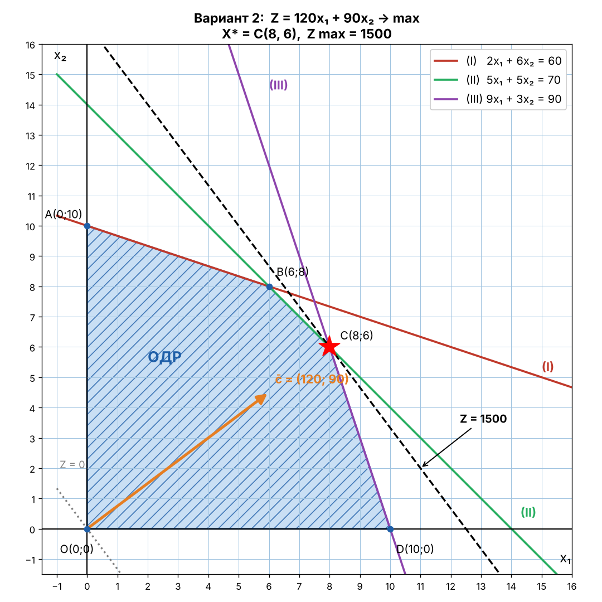

| Сырьё | Товары | ||
|---|---|---|---|
| Наименование | Запас | T1 | T2 |
| S1 | 60 | 2 | 6 |
| S2 | 70 | 5 | 5 |
| S3 | 90 | 9 | 3 |
| Удельная прибыль | 70 | 90 | |
X = (x₁, x₂) Кол-во x₁, x₂
Z = 70x₁ + 90x₂ → max
Построение прямых:
| Прямая | x₁ = 0 | x₂ = 0 |
|---|---|---|
| (I) 2x₁ + 6x₂ = 60 | x₂ = 10 | x₁ = 30 |
| (II) 5x₁ + 5x₂ = 70 | x₂ = 14 | x₁ = 14 |
| (III) 9x₁ + 3x₂ = 90 | x₂ = 30 | x₁ = 10 |
Проверка точкой O(0; 0): 0 ≤ 60, 0 ≤ 70, 0 ≤ 90 — верно ⇒ берём полуплоскости, содержащие O.
ОДР — многоугольник OABCD.

c̄ = (70; 90). Строим линию уровня Z = 0 ⊥ c̄ и перемещаем по направлению c̄. Последняя точка ОДР — B = (I) ∩ (II):
x₁ + 3x₂ = 30, x₁ + x₂ = 14 ⇒ 2x₂ = 16, x₂ = 8, x₁ = 6
B(6; 8)
Z max = 70·6 + 90·8 = 420 + 720 = 1140
Ответ: X* = (6; 8), Z max = 1140
Анализ устойчивости
Оптимальное решение лежит на пересечении прямых (I) и (II).
| Сырьё | Товары | ||
|---|---|---|---|
| Наименование | Запас | T1 | T2 |
| S1 | 60 | 2 | 6 |
| S2 | 70 | 5 | 5 |
| S3 | 90 | 9 | 3 |
| Удельная прибыль | 120 | 90 | |
X = (x₁, x₂) Кол-во x₁, x₂
Z = 120x₁ + 90x₂ → max
Построение прямых:
| Прямая | x₁ = 0 | x₂ = 0 |
|---|---|---|
| (I) 2x₁ + 6x₂ = 60 | x₂ = 10 | x₁ = 30 |
| (II) 5x₁ + 5x₂ = 70 | x₂ = 14 | x₁ = 14 |
| (III) 9x₁ + 3x₂ = 90 | x₂ = 30 | x₁ = 10 |
Проверка точкой O(0; 0): 0 ≤ 60, 0 ≤ 70, 0 ≤ 90 — верно ⇒ берём полуплоскости, содержащие O.
ОДР — многоугольник OABCD.

c̄ = (120; 90). Строим линию уровня Z = 0 ⊥ c̄ и перемещаем по направлению c̄. Последняя точка ОДР — C = (II) ∩ (III):
x₁ + x₂ = 14, 3x₁ + x₂ = 30 ⇒ 2x₁ = 16, x₁ = 8, x₂ = 6
C(8; 6)
Z max = 120·8 + 90·6 = 960 + 540 = 1500
Ответ: X* = (8; 6), Z max = 1500
Анализ устойчивости
Оптимальное решение лежит на пересечении прямых (II) и (III).